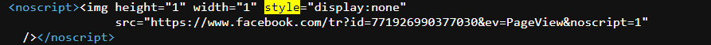
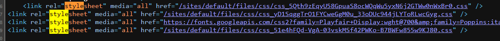
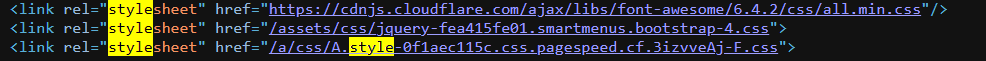
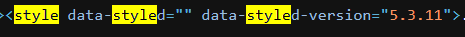
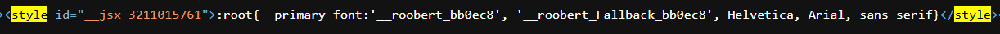
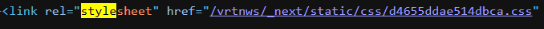

Vives
- Voorbeeld inline style attribuut bij de site van Vives:

- Voorbeeld style blok bij de site van Vives:
- <link> verwijzingen naar aparte CSS-bestanden bij de site van vives:

Miras
- Voorbeeld inline style attribuut bij de site van Miras:

- Voorbeeld style blok bij de site van Miras:
- <link> verwijzingen naar aparte CSS-bestanden bij de site van Miras:

VRT
- Voorbeeld inline style attribuut bij de site van VRT:

- Voorbeeld style blok bij de site van VRT:

- <link> verwijzingen naar aparte CSS-bestanden bij de site van VRT:
